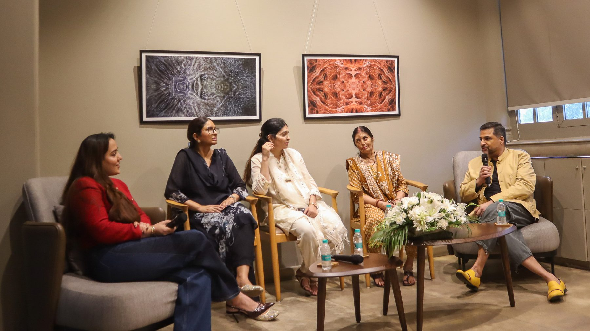

A solo photography exhibition by Monica Dhaka that asks viewers to move beyond shock, pity or fear, and to see the woman before the scar.

- Dates14 – 23 September 2026
- ArtistMonica Dhaka
- MediumPhotography
- VenueA-8, Connaught Place, Inner Circle, New Delhi
When a woman says no
In India, acid attacks are rarely random. They are often rooted in male entitlement and used as punishment when a woman says no: to a forced relationship, to marriage, to dowry demands, to domestic violence, to being controlled. The project looks at how acid attack survivors are seen after the attack, and how the scar often becomes the first thing people notice, before the person.
Part one: skin as landscape
The first part uses extreme close-up photographs of burnt and scarred skin. Through mirroring, repetition and digital manipulation, these fragments become six abstract structures and patterns, a metaphor for a life that may look ordinary from a distance but is often a daily battle up close. Alongside them are six close-ups kept almost unchanged, with only colour added. Without heavy manipulation, the scars begin to look like beautiful landscapes, asking viewers to question what they are looking at, and how.
Part two: eight portraits
The second part presents eight portraits of the survivors, showing the women as they want to be seen: as people with names, voices, families, work, hopes and futures. Beside each portrait is writing shaped from the interviews, using what the women want people to know.
The artist
Monica Dhaka's practice looks at how a first impression can become a fixed idea about a person or community. Each project begins with research, conversations and time spent with the people involved, and a photograph is often the starting point rather than the final result.
“My purpose is not to tell people what to think. It is to draw attention to how quickly meaning is assigned to a person or image, and how that meaning can change when more of the story becomes visible.”
In the press
Read Monica Dhaka's conversation with the Deccan Chronicle, The Scar Has Not Changed. Our Gaze Has.